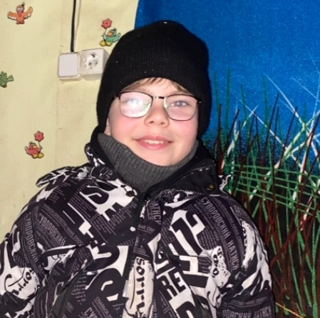
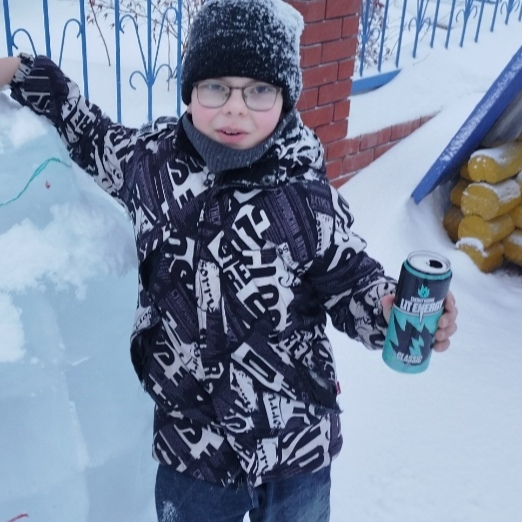
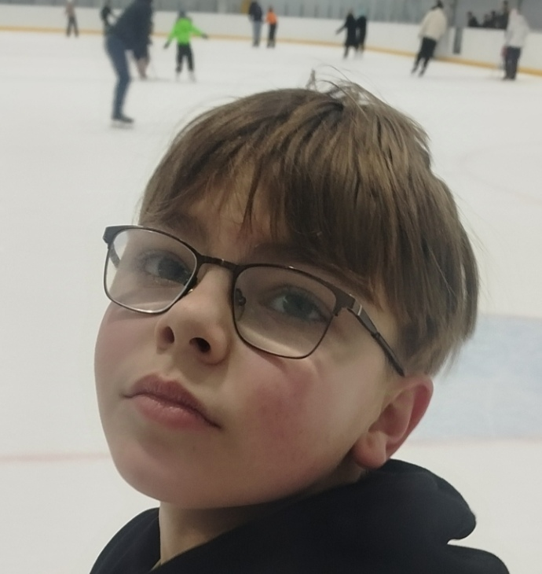
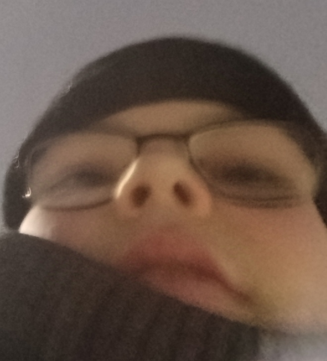

В канун Нового года произошёл необычный инцидент в жилище местного жителя Григория. По свидетельствам очевидцев, Хазеев Артём Эльвирович совершил акт "газоиспускания", что вызвало бурную реакцию присутствующих.

Григорий, пострадавшая сторона в этом инциденте, выразил намерение подать судебный иск против Артёма. Поводом стало не только произошедшее, но и систематическое потребление ответчиком энергетических напитков, что, по мнению Григория, негативно влияет на их взаимоотношения.

Сам Артём категорически отвергает все обвинения и утверждает, что ведёт здоровый образ жизни, активно занимаясь спортом. По его словам, инцидент был раздут из ничего, а энергетики он употребляет исключительно в рабочих целях.

Наши корреспонденты обнаружили в социальных сетях материалы, которые могут быть истолкованы как компрометирующие Артёма. На фотографиях запечатлён момент, который некоторые интерпретируют как состояние изменённого сознания.
